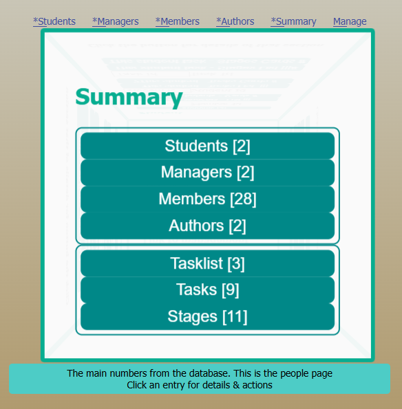
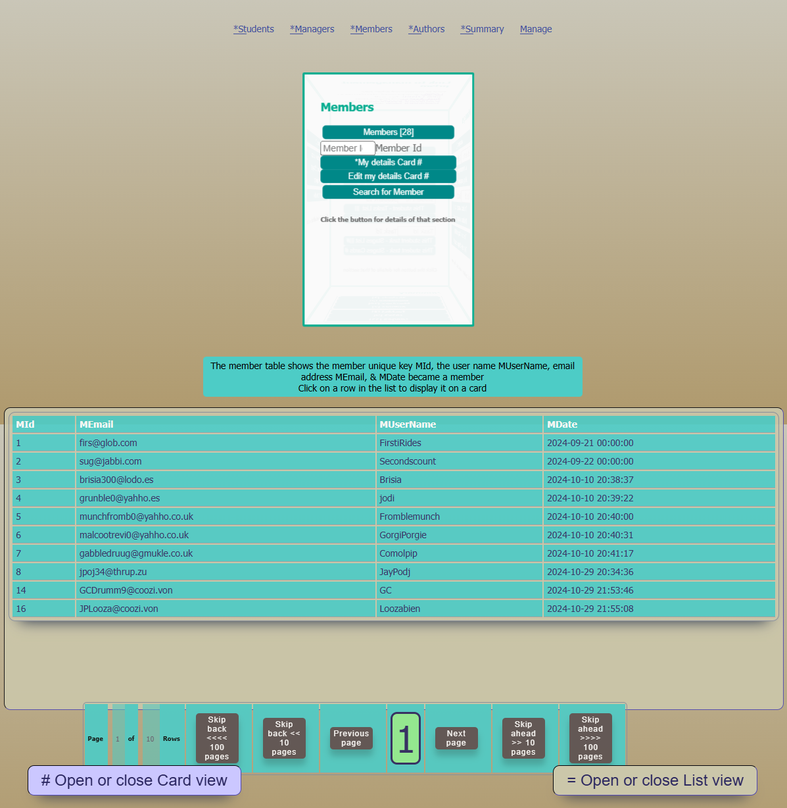
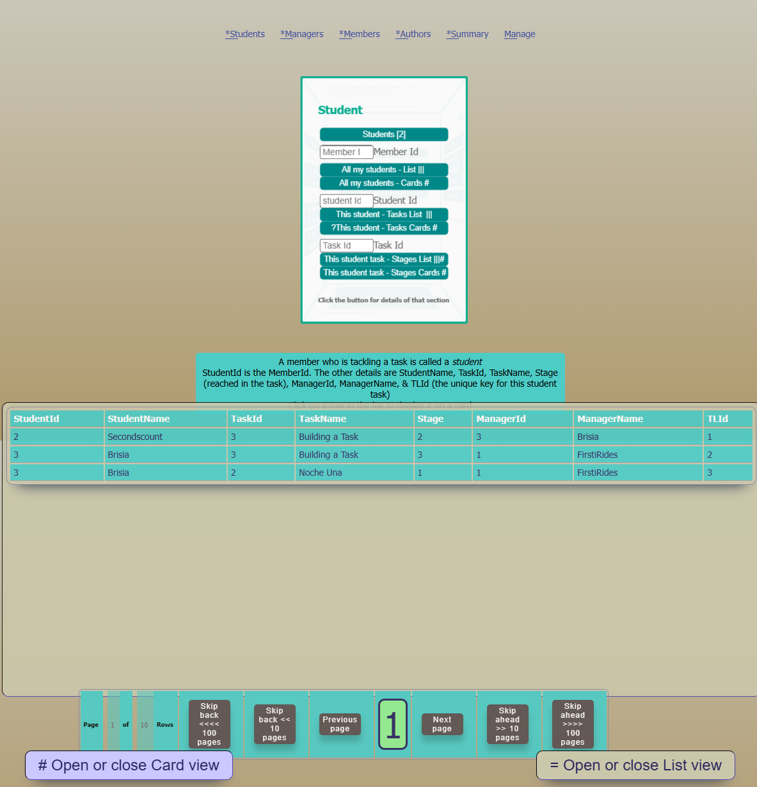
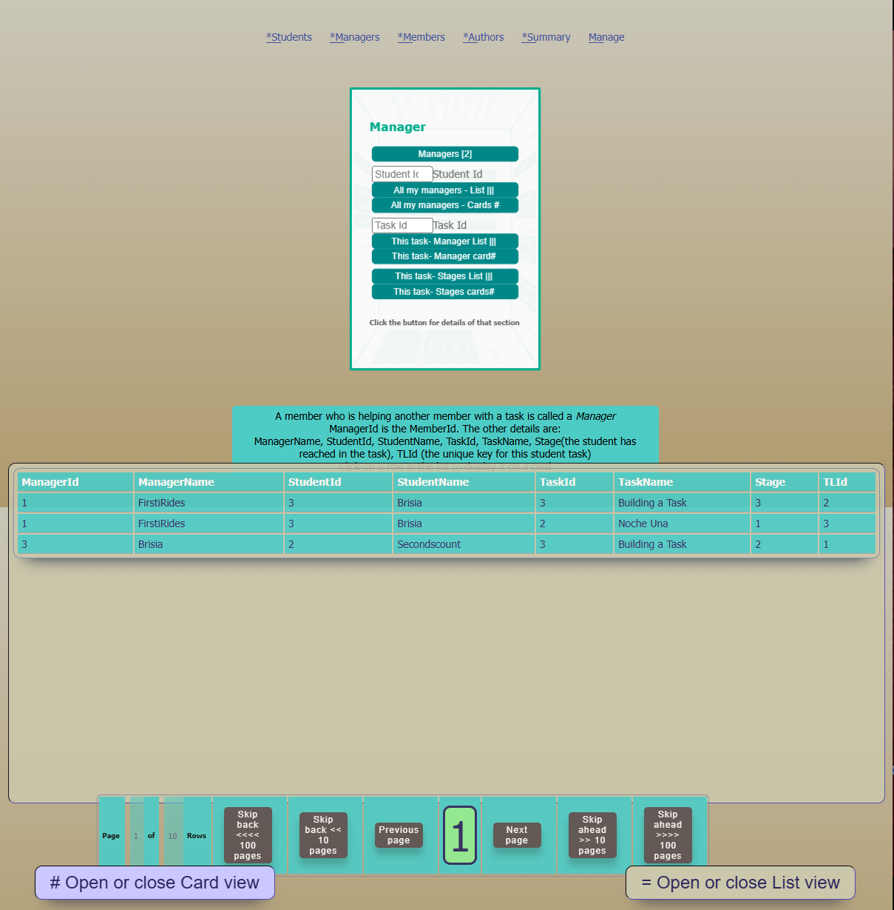
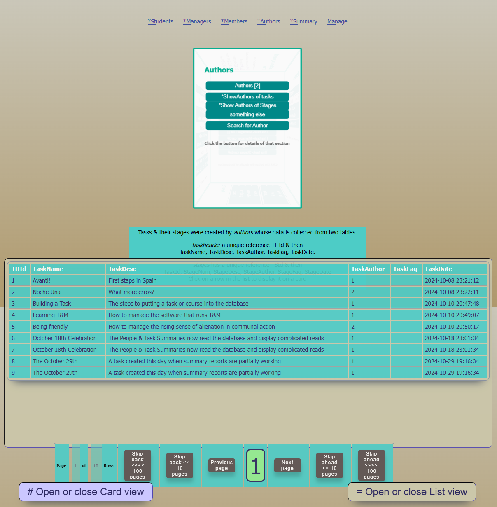

Managing a voluntary group with tasks to complete
A database driven website, under your control, to manage a group of members with a simplified tracking of tasks to complete or lessons to study.
Progress can be checked as each student completes stages of the task or lesson.
Members can self-select to tackle tasks or lessons or can be assigned by managers.
New tasks or lessons can be created with steps or stages.
Begin with the Summary
This shows how many members there are. Those members who are on a course or a task are called Students, the members who are helping them are called managers. The members who created the tasks are called Authors. Below that section are the tasks, their stages & how many have students assigned to those courses or tasks.
Any of those sections can be clicked to see the details
The menu at the top will also show the details & open a page with actions that relate to those sections.
People
The summary is in two parts. The top section is people who are classified as students, managers, members & authors.
How to use: Clicking any menu item on the page will display a page of people from the database and display them on a table that opens automatically.
Clicking any row of the table will open a card display of that row of information
In the card display there are navigation buttons previous and next to change which item is displayed, but the new item is only displayed after you click the displayed number to confirm the change. (The highest number is always limited to prevent trying to read a row that does not exist.)
Tasks.html
The lower part of the summary lists the task definitions, the stages that each task has & the tasks which have been assigned.
The tasklist shows who has been assigned to tasks as a student or manager. It also shows how far the student has moved through the stages of the task.
The information about tasks consists of a 'header' which shows
The stages are the individual steps that the task entails. Students' progress through these stages can be monitored in the tasklist.
How to use: Clicking any menu item (task, stages, tasklist) will display a page from the database. This appears on a table that opens automatically.
Clicking any row of the table will open a card display of that row of information
In the card display there are navigation buttons previous and next to change which item is displayed, but the new item is only displayed after you click the displayed number to confirm the change. (The highest number is always limited to prevent trying to read a row that does not exist.)
Summary pages are for information & searching
They quickly show how many members are in each group. The sections can be clicked to see more detail & to open pages that allow actions.
Students progress can be checked, managers & authors can be identified. Task details can be verified.
There are other pages for basic actions. Those are shown below.
Actions
The webpages that allow actions to be taken include
Members
Lists of members & their roles.
There are two hidden display panels which can be opened or closed using the buttons on the screen.
There is a table display for showing multiple rows of data from the database. This is the 'List View'.
There is a way to display a single item on its own. This is the card view. When using card view there is usually a way to click to the next or previous item which is then displayed on its own.
The list view has active rows, which if clciked will open the card view and display that row of information on its own. You can move to the next item by clicking the buttons on the card view or by clicking another row in the table.
The table only displays a limited number of rows. This is called a page of data. The page can be changed by clicking the table navigation buttons. These can jump 100s of pages at a time.
Members
How to login, signup, change password etc, choose tasks as a manager or student
Students
about assigning tasks & moving through stages
Managers
How to create tasks & stages
Authors
How to create tasks & stages
Cards to display a member, task or assigned task.
There are two hidden display panels which can be opened or closed using the buttons on the screen. If you open the card view without having selected anything to display, the card will be blank.
There is a way to display a single item on its own. This is the card view. When using card view there is usually a way to click to the next or previous item which is then displayed on its own.
The card view will show the row of data from a list if you click on the row. The card then displays that row of information on its own. You can move to the next item by clicking the buttons on the card view or by clicking another row in the table.
Cards
Click a row of a list and the data will be displayed on its own in a card. In this example the card is diplaying an assigned task. On the left with the large dark blue panel is the tasklist reference number.(TLId tasklist identification), then the task reference number (TaskId), the stage that the student has reached (stage 2), the student's user name (Brisia) and the refernce number and name of the member managing this task (1 FirstRides).
To the right is the navigation box which says the diaply is item 2. This is also displayed in the large green box idicating that the record is actually number 2. above the green box is the previous button, and below the box is the next button. Clicking either will increase or decrease the number in the box, the box will turn white as you change the number. The data will only be updated when you left click the number box. The box is green only when the displayed data reference matches the number displayed in the box
It is possible to click through to other rows either by clicking the list or by clicking the card navigation buttons. The number displayed in the large box increases with Next and decreases with Previous, but the displayed card only changes when you click that displayed number. If the databse doesn't have such a numbered row the display may jump to the next available row number.
The remember this button
Clicking the remember this button creates a new menu for you to tag the data & store it locally.
This gives options for how to tag the data to remind you later.
If you don't want to save the card data, click EXIT no save. The card will still be displayed.
The normal use is to collect data to be able to then process it such as collecting a member card for the person who will be a student and then a task for that student & then another member who will manage the task. That would be as Student, as Task & as Manager. However, it is also possible to save more than one item with the same tag. Each one will be saved separately.
This makes it possible to collect a number of students or managers or authors or tasks in a list.
The data that is saved is also sent to the server so that it is kept & can be retrieved automatically if you go to another webpage.